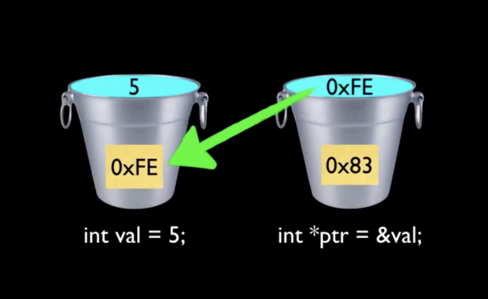

C Pointer Explanation in armasm
A C program, whatever its size, consists of functions and variables. A function contains statements that specify the computing operations to be done, and variables store values used during the computation.
Every time we want to use a variable(e.g. char c; int i;), we must declare it in advance, which actually allocates a space in memory with the width corresponding to the variable type.
A pointer is a variable that contains the address of another variable.
The compiler allocates space for local procedure variables qualified with the static attribute in .data or .bss for each definition. On the other hand, local nonstatic program variables are managed at run-time on the stack and are of no interest to the linker.
Let us begin with a simplified picture of how memory is organized. Memory is just a place to store data, just like the seats in the cinema when I watch a film. Each seat in the cinema has to be numbered, and our memory has to store different data. Of course, we need to know where our data is stored! So the memory has to be numbered like the seats, which we call memory addressing. The seats can follow the principle of "one seat corresponds to one number", starting from "No. 1". The memory is addressed one byte at a time, as shown in the figure below. Each byte has a number, which we call the memory address.
6 7 8 9 10 11 12 13
-----------------------------------------------------------------------------
... | | | | | | | | | ...
-----------------------------------------------------------------------------
A typical machine has an array of consecutively numbered or addressed memory cells that may be manipulated individually or in contiguous groups. One common situation is that any byte can be a char, a pair of one-byte cells can be treated as a short integer, and four/eight(depends on data model) adjacent bytes form a long.
How do pointer-to-pointers work in C? - Finally understand how pointers work!

A pointer is a group of cells (four in A32, eight in A64) that can hold an address. Pointers are much used in C, partly because they are sometimes the only way to express a computation, and partly because they usually lead to more compact and efficient code than can be obtained in other ways.
Pointers have been lumped with the goto statement as a marvelous way to create impossible-to-understand programs. This is certainly true when they are used carelessly, and it is easy to create pointers that point somewhere unexpected. With discipline, however, pointers can also be used to achieve clarity and simplicity.
You should also note the implication that a pointer is constrained to point to a particular kind of object: every pointer points to a specific data type.

demo program#
The following demo program is taken from TCPL | Chapter 5 - Pointers and Arrays - 5.1 Pointers and Addresses.
#include <stdio.h>
int main(int argc, char* argv[]) {
int x = 1, y = 2, z[10];
int *ip; /* ip is a pointer to int */
ip = &x; /* ip now points to x */
printf("ip = %p\n", ip);
y = *ip; /* y is now 1 */
*ip = 0; /*x is now 0 */
printf("x = %d; y = %d\n", x, y);
ip = &z[0]; /* ip now points to z[0] */
*ip = *ip + 10;
y = *ip + 1; // ++*ip; (*ip)++;
printf("x = %d; y = %d\n", x, y);
return 0;
}
GCC compile with -g option to emit extra debugging information.
format literals#
$ objdump -j .rodata -s pointer-demo
pointer-demo: file format elf64-littleaarch64
Contents of section .rodata:
0958 01000200 00000000 6970203d 2025700a ........ip = %p.
0968 00000000 00000000 78203d20 25643b20 ........x = %d;
0978 79203d20 25640a00 y = %d..
$ rabin2 -z pointer-demo
[Strings]
nth paddr vaddr len size section type string
―――――――――――――――――――――――――――――――――――――――――――――――――――――――
0 0x00000960 0x00000960 8 9 .rodata ascii ip = %p\n
1 0x00000970 0x00000970 15 16 .rodata ascii x = %d; y = %d\n
disassemble main#
Before disassembling, execute checksec.sh to check executables and kernel properties.
$ checksec --file=pointer-demo
RELRO STACK CANARY NX PIE RPATH RUNPATH Symbols FORTIFY Fortified Fortifiable FILE
Full RELRO Canary found NX enabled PIE enabled No RPATH No RUNPATH 96) Symbols No 0 1 pointer-demo
Then use objdump or gdb dissassemble to disassemble the ELF binary.
$ objdump --disassemble=main --source-comment -l pointer-demo # or
$ gdb -batch -ex 'file pointer-demo' -ex 'disassemble /rs main'
You can also use the online Compiler Explorer, honourably produced by Matt Godbolt. It highlights individual code sections and displays the equivalent disassembly in their respective colors.
Here I'm going to use radare2 to debug the targeted ELF binary.
$ r2 -Ad pointer-demo
[0xffff8fb41c40]> dcu main
[0xaaaacc200854]> i~canary,crypto,nx,pic,relocs,relro,static,stripped
canary true
crypto false
nx true
pic true
relocs true
relro full
static false
stripped false
[0xaaaacc200854]> pdf
main + 0 ;-- x3:
main + 0 ;-- x23:
main + 0 ;-- pc:
main + 0 ;-- d3:
main + 0 ;-- d23:
┌ 240: int main (int argc, char **argv);
│ main + 0 ; arg int argc @ x0
│ main + 0 ; arg char **argv @ x1
│ main + 0 ; var int64_t var_20h @ sp+0x20
│ main + 0 ; var int64_t var_24h @ sp+0x24
│ main + 0 ; var int64_t var_28h @ sp+0x28
│ main + 0 ; var int64_t var_30h @ sp+0x30
│ main + 0 ; var int64_t var_58h @ sp+0x58
│ main + 0 0xaaaacc200854 fd7bbaa9 stp x29, x30, [sp, -0x60]!
│ main + 4 0xaaaacc200858 fd030091 mov x29, sp
│ main + 8 0xaaaacc20085c e01f00b9 str w0, [sp, 0x1c]
│ main + 12 0xaaaacc200860 e10b00f9 str x1, [sp, 0x10]
│ main + 16 0xaaaacc200864 80000090 adrp x0, map._home_pifan_Projects_cpp_pointer_pointer_1.rw_
│ main + 20 0xaaaacc200868 00f447f9 ldr x0, [x0, 0xfe8]
│ main + 24 0xaaaacc20086c 010040f9 ldr x1, [x0]
│ main + 28 0xaaaacc200870 e12f00f9 str x1, [sp, 0x58]
│ main + 32 0xaaaacc200874 010080d2 mov x1, 0
│ main + 36 0xaaaacc200878 20008052 mov w0, 1
│ main + 40 0xaaaacc20087c e02300b9 str w0, [sp, 0x20]
│ main + 44 0xaaaacc200880 40008052 mov w0, 2
│ main + 48 0xaaaacc200884 e02700b9 str w0, [sp, 0x24]
│ main + 52 0xaaaacc200888 e0830091 add x0, var_20h
│ main + 56 0xaaaacc20088c e01700f9 str x0, [sp, 0x28]
│ main + 60 0xaaaacc200890 e11740f9 ldr x1, [var_28h]
│ main + 64 0xaaaacc200894 00000090 adrp x0, segment.LOAD0
│ main + 68 0xaaaacc200898 00802591 add x0, x0, 0x960
│ main + 72 0xaaaacc20089c 99ffff97 bl sym.imp.printf
│ main + 76 0xaaaacc2008a0 e01740f9 ldr x0, [var_28h]
│ main + 80 0xaaaacc2008a4 000040b9 ldr w0, [x0]
│ main + 84 0xaaaacc2008a8 e02700b9 str w0, [sp, 0x24]
│ main + 88 0xaaaacc2008ac e01740f9 ldr x0, [var_28h]
│ main + 92 0xaaaacc2008b0 1f0000b9 str wzr, [x0]
│ main + 96 0xaaaacc2008b4 e02340b9 ldr w0, [var_20h]
│ main + 100 0xaaaacc2008b8 e22740b9 ldr w2, [var_24h]
│ main + 104 0xaaaacc2008bc e103002a mov w1, w0
│ main + 108 0xaaaacc2008c0 00000090 adrp x0, segment.LOAD0
│ main + 112 0xaaaacc2008c4 00c02591 add x0, x0, 0x970
│ main + 116 0xaaaacc2008c8 8effff97 bl sym.imp.printf
│ main + 120 0xaaaacc2008cc e0c30091 add x0, var_30h
│ main + 124 0xaaaacc2008d0 e01700f9 str x0, [sp, 0x28]
│ main + 128 0xaaaacc2008d4 e01740f9 ldr x0, [var_28h]
│ main + 132 0xaaaacc2008d8 000040b9 ldr w0, [x0]
│ main + 136 0xaaaacc2008dc 01280011 add w1, w0, 0xa
│ main + 140 0xaaaacc2008e0 e01740f9 ldr x0, [var_28h]
│ main + 144 0xaaaacc2008e4 010000b9 str w1, [x0]
│ main + 148 0xaaaacc2008e8 e01740f9 ldr x0, [var_28h]
│ main + 152 0xaaaacc2008ec 000040b9 ldr w0, [x0]
│ main + 156 0xaaaacc2008f0 00040011 add w0, w0, 1
│ main + 160 0xaaaacc2008f4 e02700b9 str w0, [sp, 0x24]
│ main + 164 0xaaaacc2008f8 e02340b9 ldr w0, [var_20h]
│ main + 168 0xaaaacc2008fc e22740b9 ldr w2, [var_24h]
│ main + 172 0xaaaacc200900 e103002a mov w1, w0
│ main + 176 0xaaaacc200904 00000090 adrp x0, segment.LOAD0
│ main + 180 0xaaaacc200908 00c02591 add x0, x0, 0x970
│ main + 184 0xaaaacc20090c 7dffff97 bl sym.imp.printf
│ main + 188 0xaaaacc200910 00008052 mov w0, 0
│ main + 192 0xaaaacc200914 e103002a mov w1, w0
│ main + 196 0xaaaacc200918 80000090 adrp x0, map._home_pifan_Projects_cpp_pointer_pointer_1.rw_
│ main + 200 0xaaaacc20091c 00f447f9 ldr x0, [x0, 0xfe8]
│ main + 204 0xaaaacc200920 e32f40f9 ldr x3, [var_58h]
│ main + 208 0xaaaacc200924 020040f9 ldr x2, [x0]
│ main + 212 0xaaaacc200928 630002eb subs x3, x3, x2
│ main + 216 0xaaaacc20092c 020080d2 mov x2, 0
│ main + 220 ┌─< 0xaaaacc200930 40000054 b.eq 0xaaaacc200938
│ main + 224 │ 0xaaaacc200934 67ffff97 bl sym.imp.__stack_chk_fail
│ main + 228 └─> 0xaaaacc200938 e003012a mov w0, w1
│ main + 232 0xaaaacc20093c fd7bc6a8 ldp x29, x30, [sp], 0x60
└ main + 236 0xaaaacc200940 c0035fd6 ret
Type e!asm.pseudo; pdf to view pseudo syntax against plain asm.
Then I'll analyse the disassembly instructions, which are grouped by logic blocks around three printfs.
declare variables and array#
# int x = 1, y = 2, z[10];
│ main + 36 mov w0, 1 // w0 = 1
│ main + 40 str w0, [sp, 0x20] // [sp + 0x20] = w0
│ main + 44 mov w0, 2 // w0 = 2
│ main + 48 str w0, [sp, 0x24] // [sp + 0x24] = w0
The declaration of x, y, and z are what we've seen all along.
sp+0x20stands for local varx;sp+0x24stands for local vary;- Where is
z?
At this moment, the int array
z[10]simply declares its prototype, without any immediate reference or assignment.
Though the compiler has reserved space forz, it hasn't surfaced yet.
Read on to keep an eye on its activity and wait for it to emerge.
declare int pointer variable#
# int *ip; /* ip is a pointer to int */
# ip = &x; /* ip now points to x */
│ main + 52 add x0, var_20h // x0 = var_20h
│ main + 56 str x0, [sp, 0x28] // [sp + 0x28] = x0
# printf("ip = %p\n", ip);
│ main + 60 ldr x1, [var_28h] // x1 = [var_28h]
│ main + 64 adrp x0, segment.LOAD0
│ main + 68 add x0, x0, 0x960 // x0 = x0 + 0x960
│ main + 72 bl sym.imp.printf
ip = &x:
- x0 = var_20h: represents
&xin C. sp+0x28stands for local varip, stores&x.
printf parameters:
- main + 60: x1 = [var_28h] =
ip// value is&x - main + 64~68: x0 = 0x00000988 // format literal 1 in .rodata
dereference pointer variable#
# y = *ip; /* y is now 1 */
│ main + 76 ldr x0, [var_28h] // x0 = [var_28h]
│ main + 80 ldr w0, [x0] // w0 = [x0]
│ main + 84 str w0, [sp, 0x24] // [sp + 0x24] = w0
# *ip = 0; /* x is now 0 */
│ main + 88 ldr x0, [var_28h] // x0 = [var_28h]
│ main + 92 str wzr, [x0] // [x0] = 0
# printf("x = %d; y = %d\n", x, y);
│ main + 96 ldr w0, [var_20h] // w0 = [var_20h]
│ main + 100 ldr w2, [var_24h] // w2 = [var_24h]
│ main + 104 mov w1, w0 // w1 = w0
│ main + 108 adrp x0, segment.LOAD0
│ main + 112 add x0, x0, 0x970 // x0 = x0 + 0x970
│ main + 116 bl sym.imp.printf
y = *ip:
- x0 = [var_28h] => x0 = ip(&x)
- w0 = [x0] => w0 = x0 = ip(x)
- [sp + 0x24] = w0 => y = *ip(x) = 1
*ip = 0:
- x0 = [var_28h] => x0 = ip(&x)
- [x0] = 0 => *ip(x) = 0
printf parameters:
- main + 96: w0 = [var_20h] = x; // temp
- main + 100: w2 = [var_24h] = y;
- main + 104: w1 = w0 = x // yield x0
- main + 108~112: x0 = 0x00000970 // format literal 2 in .rodata
change pointer value(target)#
# ip = &z[0]; /* ip now points to z[0] */
│ main + 120 add x0, var_30h // x0 = var_30h
│ main + 124 str x0, [sp, 0x28] // [sp + 0x28] = x0
# *ip = *ip + 10;
│ main + 128 ldr x0, [var_28h] // x0 = [var_28h]
│ main + 132 ldr w0, [x0] // w0 = [x0]
│ main + 136 add w1, w0, 0xa // w1 = w0 + 0xa
│ main + 140 ldr x0, [var_28h] // x0 = [var_28h]
│ main + 144 str w1, [x0] // [x0] = w1
# y = *ip + 1; // ++*ip; (*ip)++;
│ main + 148 ldr x0, [var_28h] // x0 = [var_28h]
│ main + 152 ldr w0, [x0] // w0 = [x0]
│ main + 156 add w0, w0, 1 // w0 = w0 + 1
│ main + 160 str w0, [sp, 0x24] // [sp + 0x24] = w0
# printf("x = %d; y = %d\n", x, y);
│ main + 164 ldr w0, [var_20h] // w0 = [var_20h]
│ main + 168 ldr w2, [var_24h] // w2 = [var_24h]
│ main + 172 mov w1, w0 // w1 = w0
│ main + 176 adrp x0, segment.LOAD0
│ main + 180 add x0, x0, 0x970 // x0 = x0 + 0x970
│ main + 184 bl sym.imp.printf
At this point, array z appears as a reference, and we can see where it sits on the stack.
ip = &z[0]:
- x0 = var_30h = sp+0x30 stands for local var
z[0] - [sp + 0x28] = x0 => ip = x0 = &z[0]
*ip = *ip + 10:
- x0 = [var_28h] => x0 = ip
- w0 = [x0] => w0 = x0 = ip(z[0])
- w1 = w0 + 0xa => w1 = w0+10 = z[0]+10
- x0 = [var_28h] => x0 = ip
- [x0] = w1 => *ip = w1 => z[0]=z[0]+10
y = *ip + 1:
- x0 = [var_28h] => x0 = ip
- w0 = [x0] => w0 = x0 = ip(z[0])
- w0 = w0 + 1 => z[0]=z[0]+1
- [sp + 0x24] = w0 => y = w0 = z[0]
stack layout(ascii graph)#
- StackGuard in prolog/epilog, see ARM StackGuard - Stack Canary
- stack size = 0x60/96, it can accommodate 12 double(giant)-word
- sizeof(x|y|z[n])=4, sizeof(ip)=8, corresponds to word/double-word
z[10]ranges from 0x30~0x50, uninitialized with random valueipfirst points tox, then points toz[0]
stack
high addr +-----------+
↓ | canary | 🐦⬛
|-----------|+0x58 \
|z[8] | z[9]| |
|-----------|+0x50 |
|z[6] | z[7]| |
|-----------|+0x48 |
|z[4] | z[5]| > z[10]
|-----------|+0x40 |
|z[2] | z[3]| |
|-----------|+0x38 |
+----> |z[0] | z[1]| |
2 | |-----------|+0x30 /
+--+-- | ip |
1 | |-----------|+0x28
+-> | x | y |
|-----------|+0x20
| | w0 |
|-----------|+0x18
| x1 |
|-----------|+0x10
| LR |
|-----------|+0x8
| P_FP |
SP/FP → +-----------+
brief sum-up of C pointer#
As is shown above, in AArch64, every double-word is like a slot or box in the stack. By declaration, x and y are both variables of type int in C, each 4 bytes long under the LP64 data model, so together they occupy a double-word slot. ip is a pointer of 8 bytes width, conforming to P64. So it occupies an independent slot.
From the compiler's point of view, a pointer is nothing more than a variable. The difference is the restriction of the value to be set. It couldn't be assigned a normal integer value like x or y, only the address of an integer variable could be accepted, e.g. &x, &y, &z[0].
The variable (name) is like a symbol/label in assembly that represents a memory cell. If we think of the contiguous memory cells as a telephone book or yellow pages, the variable is a bit like a phone number or house number that we can use to find a person or a house. As shown in the example, when it appears on the left, it's treated as a box ready to receive a value. While on the right side, it's a reference that unboxes a value out.
A pointer variable holds an address of a certain type. The unary address-of operator & gets the address of an object, e.g. ip = &x assigns the address of x to the variable ip, and ip is said to point to x. The & operator only applies to objects in memory: variables and array elements. It cannot be applied to expressions, constants, or register variables. A direct reference to a pointer returns the address it holds, i.e. printf("ip = %p\n", ip) will print the address of variable x.
The declaration of the pointer int *ip is intended as a mnemonic; it implies that *ip is an int. It allows us to refer to an object through its address. So to access the target value to which ip points, we should use the unary object-of operator * for indirection or dereferencing. Indirectly, y = *ip gets x from the pointer ip, which is equivalent to y = x according to the result of the assignment.
vivid analogy of pointer
Let's take an example from everyday life. Suppose one day Tom comes to you and asks for Jerry's house number or telephone number, and you write this information down on a piece of paper. This piece of paper is a bit like the concept of a pointer that Tom can use to find Jerry. Back to our case, Tom is y, Jerry is x, ip is the scrip.
Since ip points to the integer x, *ip can occur in any context where x could occur. So *ip = 0 sets the target to zero, equivalent to x = 0. The unary operators * and & bind tighter than arithmetic operators, so the assignment y = *ip + 1 takes whatever ip points to, adds 1, and assigns the result to y. *ip = *ip + 10 increments *ip by 10, equivalent to x = x + 10, and so on.
dual role of the asterisk(*)
The character * plays two different roles in the definition of the example. In a declaration, it creates a new type (a pointer type of int*), while in an expression it dereferences the object to which a pointer refers, like the key to the treasure chest.
Related Contents:
- Register file of ARM64
- ARM Load/Store Addressing Modes
- ARM Push/Pop Stack Modes
- ARM64 PCS - calling convention and stack layout